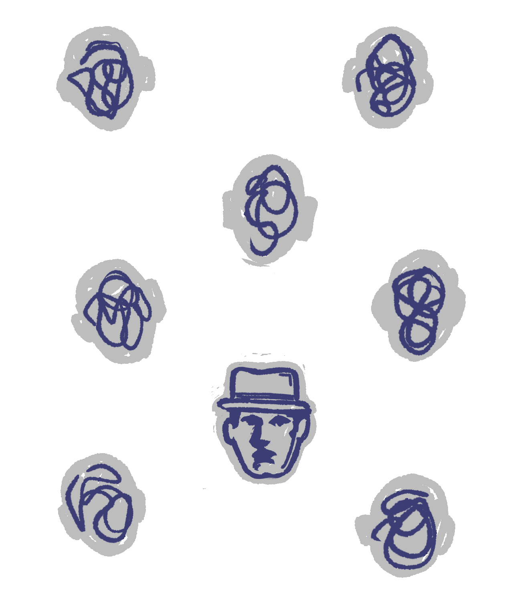

SAN
Imao sam utisak da je sve oko mene zavijeno nekom sedefastom maglom i da stvari zadobijaju neodređeno i dvostruko značenje. A iz te mutne realnosti izdvajao se dosta jasno jedino lik jednog mladog čoveka čiji je dugačak vrat već sam po sebi nagoveštavao neki u isto vreme bedan i bundžijski karakter. Traku na njegovom šeširu zamenjivala je pletena uzica. On je posle počeo da se svađa s nekim koga nisam mogao da vidim, a zatim je, kao ponesen strahom, jurnuo u neki mračan hodnik. Malo kasnije ga ponovo vidim u snu kako, tobože, korača po sunčanom danu negde oko stanice Sen Lazar. Nalazi se kao u društvu nekog svog kompanjona koji mu kaže: „Trebalo bi da daš da ti se prišije jedno dugme na kaput.“ Tu sam se onda probudio.
